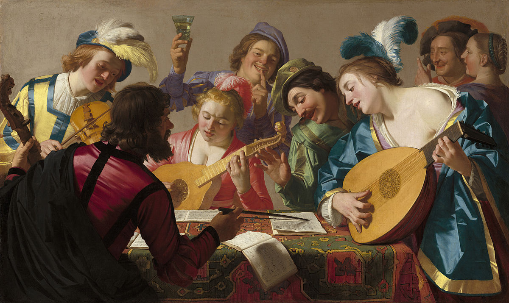

TIP: Navigate with the mouse over the paintings and let them recount their music. They’ve been silent for soooo long!
madrigal (noun)
ˈma-dri-gəl
A genre of musical composition, extremely popular in the 16th-17th century, especially in Italy and England, for voice ensemble or solo voice and instruments. Its distinguishing feature is word-painting (madrigalism): the expression, through the means of music, of the lyrics’ affects and meaning.
What is a madrigal?
This non-religious (secular) music form became so popular that composers from all over Europe contributed to it. Other musical genres surpassed the madrigal after XVII century. He had a second life between 1800 and 1900, when new authors experimented with these compositions. It is today a niche genre, appreciated by a tiny group of Renaissance music lovers but unknown to the wider public.
Why Giving Voice To Madrigals?
As lyrics by the most influential Italian poets were set to music and played at courts for people's entertainment during the 16th-17th centuries, we want to introduce users to madrigals through direct listening to some of the most famous songs, "giving them a voice" interpreted by the protagonists of some Renaissance paintings. As during Reinassence words’ meaning was amplified by the power of these musical compositions, Giving voice to Madrigals is an attempt to draw attention to this musical genre, nowadays nearly forgotten by the vas public, through a visual data journey.
The project workflow was divided into distinct phases: data cleaning and access, where data from the original database were both automatically and manually enriched; data analysis, where some patterns were revealed and introduced in the data visualisation process, and at last described in the digital storytelling phase. Our analysis, as well as our findings, are confined to our data.
The Data
Starting with the British Library History of Printed Music dataset, we investigated the musical genre of the 16th-century madrigal, limiting the field of action to the years 1501-1678, from various perspectives: to answer the question Who? and furthermore, When?, we focused on the composers and publishers. To react to What? and Where? we examined the books' travel through European ages and countries. The initial dataset has been cleaned, reorganised, and enhanced with wikidata data.
-
Musical publishing
1501Ottavio Petrucci in Venice, publishes the first book of polyphonic music ever printed i.e. Odhecaton
-
Missa Hercules Dux Ferrariae (des Prez)
1503Significant first example of soggetto cavato, dedicated to Ercole I d'Este at Ferrara's court.
-
Orlando furioso (Ariosto)
1516Earliest version of Ludovico Ariosto's Epic Poem.
-
Prose della Volgar Lingua (Bembo)
1525Crucial treaty for Italian language and poetry.
-
Madrigali de diversi musici libro primo de la serena
1530The first example of published madrigals anthology in Rome. Considered the symbolic starting year of the madrigal tradition.
-
Il primo libro de Madrigali (Verdelot)
1533First madrigals collection by the father of Italian poliphonic madrigal tradition.
-
Primo libro di Madrigali (Palestrina)
1581One of the first and most important examples of a new genre: the madrigale spirituale.
Gerusalemme Liberata (Tasso)
1581Publication of the most importan Epic Poem by Torquato Tasso
-
Il primo libro de Madrigali (Monteverdi)
1587First poliphonic madrigal book for 5 voices by Monteverdi.
-
Il Pastor fido (Guarini)
1590Pastoral drama, source text for innumerous mid-late madrigals.
-
Death of Palestrina
1594Death of Giovanni Pierluigi da Palestrina, one of the most executed and representative composers for the 17th century.
-
First Book of Songs (Dowland)
1597Collection of songs and ayres by the English composer in London.
Dafne (Peri)
1597First opera ever created. Today, only its libretto is extant.
-
Opera at courts
1600The symbolic starting year for Opera at courts in Florence and Rome with three important works: Rappresentazione di Anima e di Corpo (de' Cavalieri), Euridice (Peri) and Euridice (Caccini).
-
Nuove Musiche (Caccini)
1602Crucial collection of monodic works. Important for its programmatic introduction about vocal execution.
-
L'Artusi, i.e. the prima pratica
1603L'Artusi, ovvero Delle imperfezioni della moderna musica (Artusi) criticises Monteverdi's musical writing.
-
La Lira (Marino)
1614Lyrics collection and relevant source for mid-late madrigals texts.
-
Concerto. Settimo libro de Madrigali (Monteverdi)
1619An incredible gathering of the most different compositions, voicings and musical techniques. Its introduction is considered the seconda pratica manifesto.
Teatro Armonico Spirituale (Anerio)
1619The first example of Oratorio, represented in Rome.
-
Opera at theatre
1637The first impresarial Opera is created and represented in Venice: Andromeda (Manelli).
-
Madrigali Guerrieri et Amorosi. Libro Ottavo (Monteverdi)
1638Representative madrigals for voices and instruments, climax of Monteverdi's musical expression through madrigals.
-
Jephte (Carissimi)
1650Most important Historia Sacra (Oratorio) of the 17th century.
-
Cadmus et Hermione (Lully)
1673The French form of musical theatre, i.e. tragédie lyrique, is born.
Composers
Starting with the composers of madrigals extracted from the dataset of the British Library, we enriched the list with one more composer extracted from Wikidata, to which we integrated metadata also from Wikidata. This study about composers involves only those present in Wikidata: 245 out of the 369 present in the BL dataset.
Who are these composers? Where do they come from? Who is the most prolific madrigal composer?
From the British Library dataset, we extracted 665 records of madrigal collections published before 1678. We got to thinking about publishers.
Where are they and can we discover some European or Italian centers of publication for madrigals?
Publishers
Texts/Books
From a list of madrigal titles, we wanted to delve deeper and discover some tendencies:
Which words are the most used, thus determining some recurring themes in the texts? (Is there a correlation with the number of voices used to speak of a topic?)
The madrigal is a musical genre involving voice ensembles, but which voices are we talking about? Do composers favor a vocal formation over others?
Voices
Did you know...
-
Scrivi qualcosa sul Liuto
Much like Polish, the word national was a clear sign of patriotism which could not be tolerated by the censors’ pen.
Censors were on the lookout for any mention of traditional Polish customs and culture, including elements of national music (e.g. the polonaise) or even traditional dress (e.g. the kontusz).
Much like Polish, the word national was a clear sign of patriotism which could not be tolerated by the censors’ pen.